📊 Data Platform Architectures & Dimensional Modeling
Data platform architectures are fundamental for managing and analyzing enterprise data. A data warehouse (DW) serves as a central repository, optimized for analytical queries, contrasting sharply with operational databases designed for transactional processing. Understanding the interplay between various data architectures, processing patterns like OLTP and OLAP, and modern concepts such as data lakes and lakehouses is crucial for effective data engineering.
🏛️ Data Warehouse Fundamentals
A data warehouse is a core component of business intelligence, providing a structured, queryable repository for historical data. It addresses the limitations of directly querying operational databases, which are typically normalized for transactional efficiency and thus perform poorly on complex analytical queries.
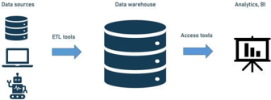
🚨 The Challenge Without a Data Warehouse
Directly querying operational databases (OLTP systems) for analytical purposes presents several issues:
Slow Query Performance: Normalized data structures (3NF) are not optimized for large, complex analytical queries.
System Strain: Analytical queries can overtax operational systems, impacting real-time transactions.
Complex Joins: Extensive joins are often required to retrieve meaningful analytical insights from normalized data.
A data warehouse overcomes these challenges by storing data in formats optimized for reading, aggregating, and querying large volumes of historical data.
🔄 OLTP vs OLAP Access Patterns
Online Transaction Processing (OLTP) and Online Analytical Processing (OLAP) represent fundamentally different data access patterns, necessitating distinct architectural approaches.
OLTP Systems:
Handle frequent, small transactions.
Optimized for individual transactions and row-level data operations.
Focus on real-time data modifications.
Examples: order entry, banking transactions.
OLAP Systems:
Process complex queries across vast datasets.
Organize data into multidimensional cubes (time, geography, product categories).
Enable interactive operations like slice, dice, drill down, and pivot.
Provide rapid aggregation and pre-calculated summaries for fast responses.
Support complex analytical functions.
Data warehouses often use dimensional modeling, organizing data into fact tables (measurements) and dimension tables (context) for intuitive analysis.
📊 When OLTP Systems Fall Short: The Need for OLAP
Operational databases, while excellent for transactions, struggle with deep analytical questions that require aggregating vast historical datasets across multiple dimensions. This is where data warehouses and OLAP systems excel.
Examples of complex analytical questions that OLTP systems struggle with:
Complex Sales Trends: Analyzing year-over-year sales growth by product line, region, and customer segment to identify seasonal patterns.
Predictive Inventory: Forecasting optimal inventory levels by combining historical sales, supplier lead times, and promotional impacts.
Customer Value Metrics: Calculating the total revenue a customer is expected to generate over their relationship with the business.
Financial Performance: Comparing budgeted expenditures and revenues against actual figures across departments for variance analysis.
📝 Defining the Data Warehouse
Prominent figures in data management have provided foundational definitions:
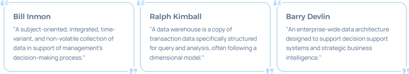
These definitions emphasize that a data warehouse is structured data designed to support decision-making and business intelligence.
🏷️ Key Traditional Data Warehousing Terminology
Data Warehouse: A centralized repository for integrated, historical data, designed for analytical reporting and business intelligence.
Normalized Model: A database design approach reducing data redundancy and improving integrity, primarily for transactional systems.
BI (Business Intelligence): Tools and processes that transform raw data into meaningful insights for informed business decision-making.
Data Mart: A focused subset of a data warehouse, serving the analytical needs of a specific department or business function.
OLAP (Online Analytical Processing): Technology enabling interactive, multidimensional analysis of large volumes of data for strategic insights.
Data Mining Model: Algorithms and techniques used to discover patterns, trends, and anomalies from large datasets for predictive analysis.
Dimensional Model, Star Schema: A logical data model (facts + dimensions) optimizing data warehouses for fast, intuitive querying.
ETL (Extraction, Transformation, Load): The core process of moving data from source systems, cleaning/restructuring it, and loading into a data warehouse.
Ad-hoc Query: A query formulated on-the-fly to answer a specific, spontaneous business question.
🚀 Evolving Data Landscape: Key Concepts
As data volumes and varieties grow, new architectural paradigms have emerged to meet modern analytical demands.
Lakehouse Architecture: A hybrid data architecture combining the flexibility and cost-efficiency of data lakes with the robust data management and ACID transaction capabilities of data warehouses. It supports both structured and unstructured data for diverse analytics and machine learning.
Data Mesh: A decentralized data architecture that treats data as a product, organized by business domains. Each domain manages its own data infrastructure, products, and standards, fostering agility, scalability, and data ownership.
Data Lake: A centralized repository for massive volumes of raw, unprocessed data in its native format. It is schema-agnostic, ideal for big data analytics and machine learning.
Data Fabric: An architecture providing a unified, intelligent view of an organization's data across disparate environments (on-premise, cloud, hybrid). It integrates data management tools and leverages AI/ML for automated data discovery, governance, and consumption.
Streaming Data: Data generated continuously from numerous sources (IoT, web clicks, financial transactions), requiring immediate processing for instant insights.
⚙️ The Data Engineering Process
The data engineering process involves a series of steps to move, transform, and prepare data for analysis.
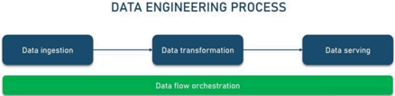
Data Ingestion: Acquiring raw data from various sources.
Data Transformation: Cleaning, restructuring, and enriching data.
Data Serving: Making processed data available for analysis or applications.
Data Flow Orchestration: Managing the automated workflows.
Additional key concepts in data engineering:
Data Migration: Moving data between systems or environments, e.g., on-premises to cloud.
Data Integration: Consolidating information from diverse systems and IoT devices into unified data streams.
Data Wrangling: Converting raw, unstructured data into clean, usable formats for analytics and machine learning.
Database Operations: Copying tables, maintaining synchronization, and supporting backup/disaster recovery.
🏗️ Data Architecture - Layers
Modern data architectures, like the Lakehouse, are often layered to manage data maturity and processing.
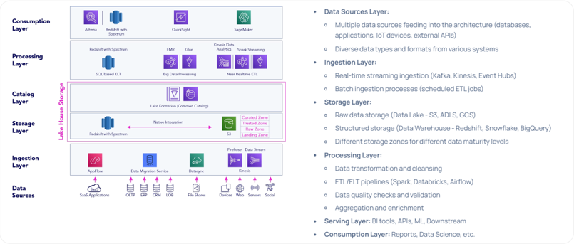
Common layers include:
Data Sources Layer: Multiple data sources (OLTP, ERP, CRM, IoT, web, social media) feeding into the architecture.
Ingestion Layer: Real-time streaming (Kinesis, Event Hubs) and batch ingestion processes.
Storage Layer: Raw data storage (Data Lake - S3, ADLS) and structured storage (Data Warehouse - Redshift, Snowflake). Different zones (Landing, Raw, Trusted, Curated) for data maturity.
Processing Layer: Data transformation, cleansing, ETL/ELT pipelines (Spark, Databricks), quality checks, aggregation, and enrichment.
Consumption Layer: BI tools, APIs, Machine Learning, reports, and data science.
🏛️ Two-tier Data Warehouse Architecture
A common architectural pattern for data warehouses involves multiple tiers to separate concerns and optimize performance.
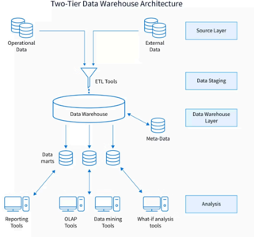
Source Systems Layer: Operational and external data sources.
Data Staging/ETL Layer:
Extract, Transform, Load processes.
Data cleansing and validation.
Application of business rules.
Enterprise Data Warehouse Layer (EDW):
Centralized repository for integrated, historical data.
Single source of truth for the organization.
Includes metadata about ETL processes and data catalog.
Data Marts Layer:
Department-specific or subject-oriented subsets.
Optimized for specific business functions (Sales, Finance).
Denormalized for query performance.
Derived from the central EDW.
🌐 A Complete Data Engineering Ecosystem: Technology Perspective
A modern data engineering ecosystem integrates various components to create a unified, scalable architecture.
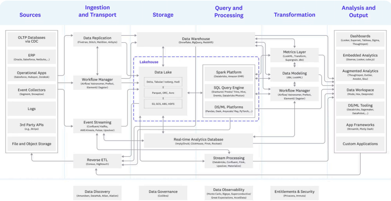
This ecosystem includes:
Sources: OLTP databases, ERP, operational apps, event collectors, logs, APIs, file/object storage.
Ingestion and Transport: Data replication (Fivetran, Stitch), workflow managers (Airflow), event streaming (Kafka, Kinesis), Reverse ETL.
Storage: Lakehouse, Data Lake (Delta, Iceberg, Hudi, S3), Data Warehouse (Snowflake, BigQuery, Redshift).
Query and Processing: Spark platforms (Databricks, EMR), SQL query engines (Presto, Trino), DS/ML platforms, real-time analytics databases (Druid, ClickHouse), stream processing.
Transformation: Metrics layer (LookML, dbt), data modeling, workflow managers.
Analysis and Output: Dashboards (Looker, Tableau), embedded analytics, augmented analytics, data workspaces, DS/ML tooling, custom applications.
Cross-cutting Concerns: Data Discovery (Amundsen, DataHub), Data Governance (Collibra), Data Observability (Monte Carlo), Entitlements & Security (Privacera, Immuta).
ETL vs. ELT Pipelines 🔄
Understanding the difference between ETL (Extract, Transform, Load) and ELT (Extract, Load, Transform) is crucial for designing modern data pipelines.
📦 ETL Pipeline Architecture (Inmon & Kimball)
ETL is the traditional approach where data transformation occurs before loading into the target system. This ensures data quality and consistency from the outset.
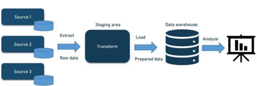
Extract: Retrieving raw data from multiple sources (databases, APIs, flat files, streaming platforms) in its original format.
Transform: Standardizing and cleansing data to meet specific format requirements. This involves applying business rules, data quality checks, and formatting, significantly improving data discoverability and usability.
Load: Saving transformed data to its final destination, typically a data warehouse, ready for immediate analysis and reporting.
☁️ ELT Pipeline Architecture (Lakehouse)
ELT reverses the traditional ETL sequence by loading raw data first and transforming it later. This modern approach leverages the processing power of cloud data warehouses and provides greater flexibility.
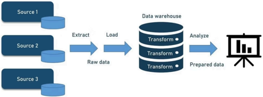
Different Processing Order: Extract, Load, Transform. Data is ingested in its raw form and transformed only when needed for specific use cases.
Maximum Data Ingestion: ELT pipelines excel at capturing as much data as possible upfront, allowing transformation decisions to be made later based on emerging business requirements and analytical needs.
Schema Flexibility: The ELT architecture doesn't require upfront decisions about data types, structures, and formats. This schema-on-read approach provides maximum agility for data exploration and analysis.
🎯 Data Marts: Focused Analytics
Data marts are smaller, focused data warehouses designed to serve the specific analytical needs of a particular business unit, department, or subject area.
Departmental Data Repositories: They provide faster query performance and simplified access for end-users by containing only the relevant subset of enterprise data.
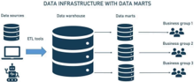
⬆️ Bottom-Up Approach (Kimball)
Multiple specialized data marts can be combined to create a comprehensive enterprise data warehouse. This approach emphasizes building for specific business processes first.
⬇️ Top-Down Approach (Inmon)
A central data warehouse can be decomposed into focused data marts serving specific departments or functions. This approach prioritizes a single, integrated source of truth.
⚖️ Inmon vs. Kimball Approaches
Two prominent methodologies guide data warehouse design: Bill Inmon's top-down approach and Ralph Kimball's bottom-up approach.
⬆️ Inmon - Top-down approach
Inmon's approach emphasizes building a normalized Enterprise Data Warehouse (EDW) first, which then feeds specialized data marts.
Key Principles:
Builds a normalized EDW first.
Data flows from source systems into the EDW, then to specialized data marts.
Focuses on comprehensive data integration to create a single source of truth.
Utilizes Third Normal Form (3NF) for the core warehouse structure, ensuring robust data consistency and reduced redundancy.
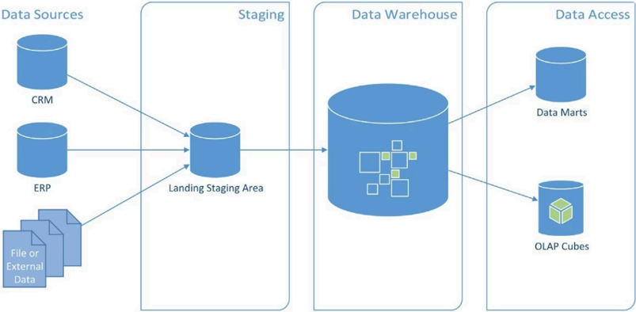
Limitations:
Time-consuming and expensive to implement.
Requires significant upfront planning and design.
Complex ETL processes due to normalization.
Slower query performance compared to dimensional models.
Less agile and difficult to adapt to changing business requirements.
Requires a deep understanding of the entire enterprise data landscape.
⬇️ Kimball - Bottom-up approach
Kimball's approach emphasizes building dimensional data marts first, typically using star schemas, and then integrating them through conformed dimensions.
Key Principles:
Emphasizes dimensional modeling, primarily using star schemas for data marts.
Data marts are built first, focusing on specific business processes (bottom-up).
Focuses on ease of use and rapid query performance for business users.
Uses denormalized tables (facts and dimensions) to reduce joins and improve speed.
Promotes a "bus architecture" for integrating data marts with conformed dimensions.
Designed for agile development and quick delivery of analytical solutions.
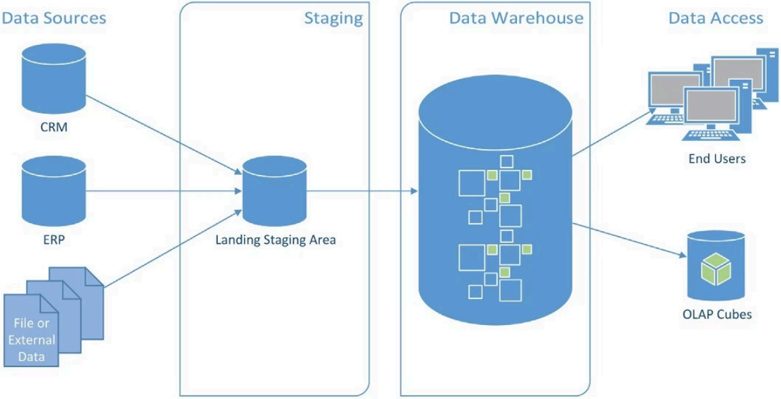
Limitations:
Potential for data redundancy across different data marts.
Can lead to inconsistencies if conformed dimensions are not strictly managed.
Less suitable for complex, enterprise-wide data integration needs without careful planning.
May not handle all analytical use cases as effectively as a highly normalized EDW.
Challenges in maintaining and evolving a large number of disparate data marts.
Initial setup might require significant effort in defining dimensions and facts.
🌊 Big Data Engineering & Data Lakes
Data lakes represent a paradigm shift in how organizations store and manage enterprise data, embracing the full diversity of modern data sources at massive scale.
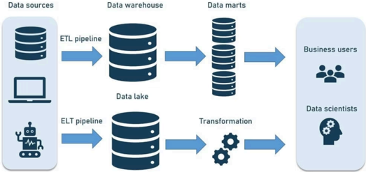
Unlike traditional warehouses with rigid schemas, data lakes embrace the full diversity of modern data sources, storing everything in its native format at massive scale.
On top of the data lake, multiple layers can be created during various transformation steps.
🆚 Data Warehouse vs Data Lake
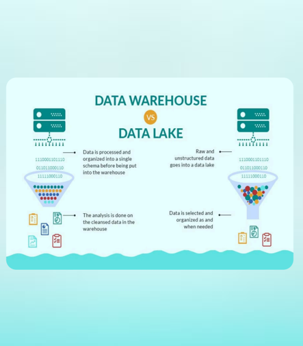
Data Warehouse: Data is processed and organized into a single schema before being put into the warehouse. Analysis is done on cleansed data.
Data Lake: Raw and unstructured data goes into a data lake. Data is selected and organized as and when needed (schema-on-read).
🏗️ Data Lake Architecture
Data flows from diverse sources through ingestion layers, into storage zones with varying levels of refinement, and ultimately serves multiple consumption patterns.
What Defines a Data Lake?
A data lake is a centralized repository that stores all enterprise data in its natural, raw format. This includes structured, semi-structured, unstructured, and binary data.
It's like a natural lake with multiple tributaries, receiving continuous streams of various data types in real-time.
Breaking Down Data Silos
Data lakes emerged to solve enterprise data fragmentation. Organizations consolidate all data into a single, scalable repository, typically built on distributed systems like Hadoop or cloud object storage.
Raw Source Data: Unmodified copies of data from source systems, preserving original context.
Transformed Data: Processed data optimized for reporting, visualization, advanced analytics, and machine learning.
Analytical Assets: Curated datasets, models, and features ready for immediate business insights.
Data Types in a Data Lake
Data lakes embrace all data formats without discrimination, allowing organizations to capture value from all information assets.
Structured Data: Relational database tables with defined schemas.
Unstructured Data: Emails, documents, PDFs, text files lacking predefined models.
Semi-Structured Data: CSV, logs, XML, JSON with flexible schemas.
Binary Data: Images, audio, video content.
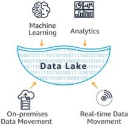
Unlimited Scale: Data lakes can store every type of data in its native format with no fixed limits, increasing analytic performance and enabling native integration.
🌟 Benefits and Principles of Data Lakes
Strategic Advantages
The primary objective of data lakes is to offer an unrefined, comprehensive view of data to data scientists and analysts, leading to a competitive edge.
New Analytics Capabilities: Enable novel analytical approaches using previously unavailable data sources.
Schema Flexibility: No need for upfront data modeling into rigid enterprise-wide schemas.
Enhanced Quality: Access to raw data improves the depth and accuracy of analyses.
Business Agility: Rapid adaptation to changing business questions and analytical needs.
AI and ML Ready: Native support for machine learning and artificial intelligence workloads.
Competitive Edge: Data-driven insights create sustainable competitive advantages.
Unified Architecture: Eliminates data silos and fragmented storage systems.
Core Principles
Accept All Data: No data is refused entry; all data is loaded from various source systems and retained indefinitely.
Preserve Raw State: Data is stored in an untransformed or minimally transformed state, exactly as received.
Transform on Demand: Data is transformed and structured based on specific analysis requirements, not predetermined schemas.
🔑 Essential Concepts in Data Lake Management
Effective data lake management requires robust capabilities across several areas.
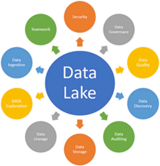
Data Ingestion: Connectors retrieve data from diverse sources and load it into the data lake.
Data Storage: Scalable, cost-effective storage with fast access.
Data Governance: Managing availability, usability, security, and integrity across all data assets.
Security: Multi-layered protection implemented at every layer.
Data Quality: Ensuring high-quality data to generate accurate business insights; poor quality leads to poor decisions.
Data Discovery: Tagging and cataloging techniques to express and share data understanding.
Data Auditing: Evaluating risk, compliance, and adherence to regulatory requirements.
Data Lineage: Tracking data origins, transformations, and movement throughout the ecosystem.
Data Exploration: Initial stage of data analysis enabling hypothesis formation.
📊 Data Warehouse vs Data Lake Comparison
Organizations typically require both a data warehouse and a data lake, as they serve fundamentally different needs and use cases.
Data Warehouse Characteristics
Predefined Structure: Data structure and schema are defined in advance (schema-on-write).
Clean and Enriched: Data is cleaned, enriched, and transformed before storage.
Single Source of Truth: Serves as the authoritative, consistent view of enterprise data.
Structured Focus: Primarily handles relational data with well-defined schemas.
Business Users: Optimized for SQL-based reporting and business intelligence tools.
Data Lake Characteristics
Flexible Structure: Data structure or schema is not defined at ingestion time (schema-on-read).
Raw Data Storage: Data is stored in its native format without upfront transformation.
Multiple Possibilities: Supports many possible analytics approaches on the same data.
Diverse Data Types: Accommodates relational and non-relational data (mobile apps, IoT, social media).
Data Scientists: Enables advanced analytics, machine learning, and exploratory data science.
Detailed Comparison Matrix
Characteristics | Data Warehouse | Data Lake |
|---|---|---|
Data | Relational from transactional systems, operational databases, and line of business applications | Non-relational and relational from IoT devices, web sites, mobile apps, social media and corporate applications |
Schema | Designed prior to the DW implementation (schema-on-write) | Written at the time of analysis (schema-on-read) |
Price/Performance | Fastest query results using higher cost storage | Query results getting faster using low-cost storage |
Data Quality | Highly curated data that serves as the central version of the truth | Any data that may or may not be curated (ie. raw data) |
Users | Business analysts | Data scientists, Data developers, and Business analysts (using curated data) |
Analytics | Batch reporting; BI and visualizations | Machine Learning, Predictive analytics, data discovery profiling and |
Parameters | Data Lakes | Data Warehouse |
|---|---|---|
Data | Data lakes store everything: | Data Warehouse focuses only on Business Processes. |
Processing | Data are mainly unprocessed | Highly processed data. |
Type of Data | It can be Unstructured, semi-structured and structured. | It is mostly in tabular form & structure. |
Task | Share data stewardship | Optimized for data retrieval |
Agility | Highly agile; configure and reconfigure as needed. | Compare to Data lake it is less agile and has fixed configuration. |
Users | Data Lake is mostly used by Data Scientist | Business professionals use data Warehouse widely |
Storage | Data lakes design for low-cost storage. | Expensive storage that give fast response times are used |
Security | Offers lesser control. | Allows better control of the data. |
Replacement of EDW | Data lake can be source for EDW | Complementary to EDW (not replacement) |
Schema | Schema on reading (no predefined schemas) | Schema on write (predefined schemas) |
Data Processing | Helps for fast ingestion of new data. | Time-consuming to introduce new content. |
Data Granularity | Data at a low level of detail or granularity. | Data at the summary or aggregated level of detail. |
Tools | Can use open source/tools like Hadoop/ Map Reduce | Mostly commercial tools. |
Architecture Decision: Modern data architectures often implement both systems in a complementary fashion, using data lakes for raw data storage and exploration, while maintaining data warehouses for curated, high-performance analytical workloads.
🚫 Data Lake vs Data Swamp: Avoiding Pitfalls
A data swamp is a data lake that has deteriorated into an unmanaged repository, where data becomes inaccessible or provides minimal value due to inadequate data governance.
The Risk of Poor Governance: Without proper cataloging, quality controls, and metadata management, a data lake can become a dumping ground rather than a valuable asset.
Practical Accessibility Challenges: While data lakes theoretically offer access to all data, difficulty in parsing unstructured data creates barriers to insight generation.
Organizations must invest in data cataloging, governance frameworks, and quality management to prevent data lakes from becoming swamps.
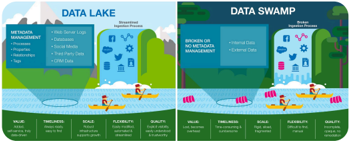
Metadata Management: Comprehensive cataloging and tagging of all data assets for discoverability.
Access Policies: Clear governance policies defining who can access what data.
Data Quality Controls: Automated validation and quality checks to ensure data reliability.
Lifecycle Management: Defined retention policies and archival strategies to prevent unlimited data accumulation.
💎 Lakehouse (Medallion) Architecture
The Lakehouse (Medallion) Architecture is a hybrid data architecture that combines the flexibility and cost-efficiency of data lakes with the robust data management and ACID transaction capabilities of data warehouses. It organizes data into distinct layers, progressively improving data quality.
Key Principles
Layered Approach: Organizes data into three distinct layers: Bronze (raw), Silver (refined), and Gold (curated), improving data quality at each stage.
Delta Lake Foundation: Often built on Delta Lake, providing ACID transactions, schema enforcement, data versioning, and time travel.
Bronze Layer (Raw): Ingests source data as-is, ensuring historical immutability and full traceability.
Silver Layer (Refined): Applies cleansing, filtering, and basic transformations, often joining data from multiple Bronze tables for a consistent view.
Gold Layer (Curated): Delivers aggregated, denormalized, and highly optimized data for specific business intelligence, reporting, and machine learning applications.
Progressive Data Quality: Data quality and reliability increase as data moves through the layers.
Unified processing for streaming and batch data.
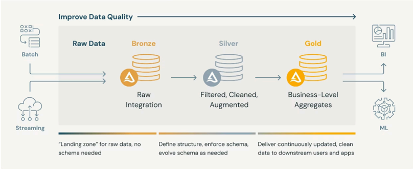
Limitations
Increased Complexity: Multiple layers can add complexity to data pipelines, especially for smaller projects.
Databricks/Delta Lake Specific: Full implementation often leverages specific features of the Databricks Lakehouse Platform, potentially leading to vendor lock-in.
Resource Intensive: Storing and processing data across three layers can consume more storage and compute resources if not optimized.
🗺️ Medallion Architecture: Zones Explained
The Medallion Architecture categorizes data into distinct zones, each with a specific purpose.
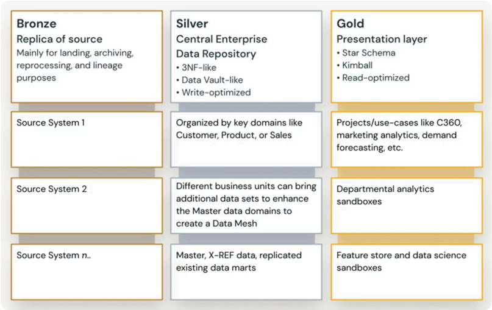
Bronze (Raw Data): The initial staging/landing zone where raw, immutable data is ingested as-is, serving as the historical record of source data. It allows different ways of ingesting data from various sources.
Silver (Cleaned & Refined): The trusted zone where data is cleaned, validated, and transformed. It serves as a reliable single source of truth for further processing. It supports parallel/independent ingestion.
Gold (Curated & Aggregated): This zone delivers highly curated, aggregated, and optimized data for specific business intelligence, reporting, and machine learning applications. It features consolidated data and conformed dimensions.
Additional Specialized Zones
Sandbox Zone: A flexible, isolated environment for data scientists and analysts to experiment without impacting production.
Backup Zone: Dedicated to storing copies of data for disaster recovery, ensuring business continuity.
Archive Zone: For long-term (cold) storage of inactive historical data, crucial for compliance and reducing costs.
🔒 Medallion: PII Protection Perspective
From a privacy and security perspective, the medallion architecture implements progressive data protection and personally identifiable information (PII) handling.
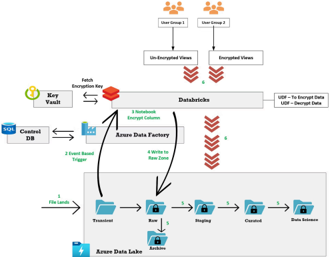
Bronze: PII Encrypted: Raw data contains encrypted PII fields, maintaining compliance while preserving data utility for authorized users.
Silver: PII Masked: Sensitive fields are masked or tokenized, allowing broader access while protecting individual privacy.
Gold: PII Aggregated: Aggregated metrics eliminate individual-level data, enabling wide distribution without privacy concerns.
This layered approach supports regulatory requirements like GDPR, CCPA, and HIPAA.
🏷️ Medallion Zones - Alternative Names
Landing | Raw | Harmonized | Distilled | Explorative | Delivery | |
|---|---|---|---|---|---|---|
Granularity (Raw Aggregated) | Raw | Raw | Raw | Aggregated | Any | Any |
Schema (Any Consolidated) | Any | Any | Consolidated | Consolidated, enriched | Any | Any |
Syntax (Unchanged Consolidated) | Basic transformations | Basic transformations | Consolidated | Consolidated | Any | Any |
Semantics (Unchanged Processed) | Mostly unchanged, unless needed for compliance | Mostly unchanged, unless needed for compliance | Mostly unchanged, unless needed for compliance | Complex processing | Any | Any |
Properties | Governed, non-historized, non-persistent; protected part; use case independent | Governed, historized, persistent, protected part; use case independent | Governed, historized, persistent, protected part; use case independent | Governed, historized, persistent; protected part; use case dependent | Not governed, non - persistent, protected part; use case dependent | Governed, persistent, protected part; use case dependent |
User Groups | Systems, processes | Data scientists, systems, processes | Data scientists; systems, processes | Data scientists; domain experts, systems, processes | Data scientists | human users, systems, processes Any |
Modeling Approach | Any | Any | Standardized | Standardized | Any | Any |
☁️ Multi-cloud Medallion Architecture
A Multi-cloud Medallion Architecture is designed to process and refine data across various cloud providers (AWS, Azure, GCP).
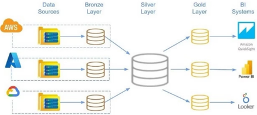
Integration & Synchronization: Uses cloud-agnostic tools or direct cloud-to-cloud connections to ensure seamless data flow and consistency.
Benefits:
Avoiding Vendor Lock-in: Flexibility to choose the best services from different providers.
Leveraging Best-of-Breed Services: Utilize specialized services unique to each cloud.
Geographic Distribution: Enhance data locality, disaster recovery, and compliance.
Minimizing data movement and complying with strict data residency regulations.
Maintaining business continuity.
🏠 Hybrid On-Prem Approach
This approach extends the medallion architecture to on-premises environments, allowing organizations to maintain control over their data.
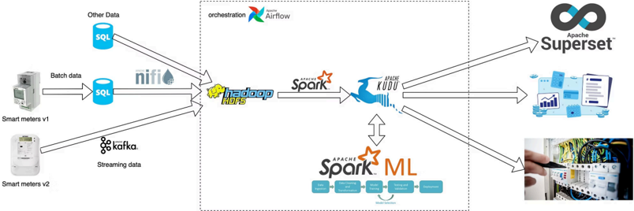
Medallion zones (Bronze, Silver, Gold) can be implemented using a variety of on-premises storage and processing technologies.
Storage options: HDFS (Hadoop Distributed File System) and MinIO (S3-compatible object storage).
Table formats and processing: Hive, Kudu, and Apache Iceberg.
This flexibility allows full utilization of existing on-prem infrastructure without compromising the medallion pattern's integrity.
Crucial for addressing stringent data sovereignty and compliance requirements.
🧠 Medallion in RAG-based Systems
The Medallion Architecture can be adapted for Retrieval Augmented Generation (RAG) based systems, ensuring a structured approach to data processing for optimal Large Language Model (LLM) retrieval.
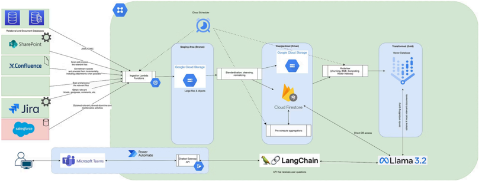
Bronze Layer: Ingests raw, multi-modal data (text, images, audio, video) directly from various sources, stored in its original, immutable format.
Silver Layer: Processes data from Bronze, involving cleaning, normalization, chunking of text, generation of embeddings, OCR for images, and transcription for audio. Goal is to refine data into a consistent and usable format.
Gold Layer: Houses an optimized vector database containing indexed embeddings. This refined data is ready for efficient retrieval by LLMs, forming a high-quality knowledge base for RAG workflows.
This systematic approach ensures superior data quality, full traceability of data lineage, and significantly optimized retrieval performance for RAG applications.
⏳ Batch vs. Streaming Data Processing
Understanding the fundamental differences between batch and streaming data processing is crucial for designing efficient and responsive data architectures.
Batch Processing
Processes large volumes of data at scheduled intervals.
Data is collected over time and processed in chunks.
Suitable for operations where latency is not critical (e.g., daily reports, monthly payroll).
Optimized for high throughput and complex transformations.
Example: End-of-day financial reconciliations.
Streaming Processing
Processes data continuously as it arrives.
Data is processed in small increments or events.
Essential for scenarios demanding real-time insights and immediate actions (e.g., fraud detection, live dashboards).
Optimized for low latency and rapid response.
Example: Real-time sensor data analysis.
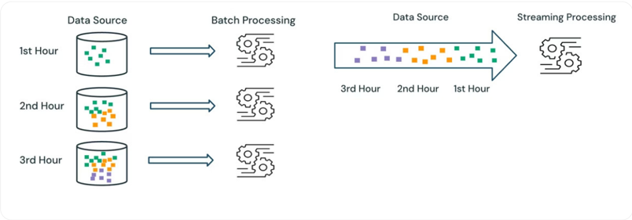
Integrating Streaming and Batch Data: Challenges
Integrating both processing types introduces specific challenges:
Real-Time Ingestion: Facts and dimensions from customer-facing applications are consumed in near real-time, transformed, and stored in delta tables.
Batch Processing: Dimensions not yet streamed are ingested in batch ETLs from different parts of the system.
Join Challenge: Some streamed facts may reference dimension table keys that do not yet exist, requiring careful handling.
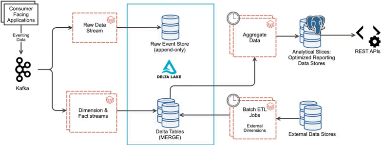
📐 Dimensional Modeling: Bus Matrix
The Bus Matrix is a foundational tool in enterprise data warehousing, guiding the development of analytical solutions by mapping business processes to shared dimensions. Ralph Kimball's approach emphasizes that dimensional modeling is built on business processes, with the Enterprise Data Warehouse being the sum of conformed and integrated models.
🚌 The Bus Matrix: Foundation of Enterprise Data Warehousing
The Bus Matrix is a high-level model of business processes executed daily, weekly, or monthly. It lists business processes in simple business language, explaining what each process is, its frequency, what can be measured, and who the key players are.
It lists the fact tables and dimension tables needed.
It can be created and understood by business stakeholders.
It stores all information the data team needs.
❓ Define a Business Problem
Dimensional modeling begins with understanding the business problem. The Bus Matrix maps shared dimensions (columns) against business processes (rows), enabling incremental data asset development.
Design determines fact data grain and required dimensions for accessible, faster queries.
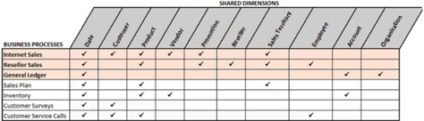
🚶 The Four Steps of Dimensional Modeling
To model a business process dimensionally, follow these four steps:
Identify the Business Process: Define the specific business activity to be measured and analyzed.
Identify the Dimensions: Define the objects and context that describe the business process.
Identify the Grain: Determine the level of detail for each measurement in the process.
Identify the Facts: Specify the measurable metrics that quantify the business process.
This process typically takes 1-2 days per business process, requiring a subject matter expert and a data architect with dimensional modeling knowledge.
🍋 Example: Happy Lemonade Stand
Consider a lemonade stand business with several processes:
Selling Lemonade: Transactional process of selling glasses ($1 for 33cl) or bottles ($3 for 1 liter) to customers.
Process Characteristics: Transactional, grain at individual sale, not all customers have loyalty cards.
Loyalty Program Benefits: 5 cups for 4 (vs. 5 regular), 2 bottles for 5.50 (vs. 6 regular), requires social media follow.
Purchase Ingredients: Procurement process for lemons and other ingredients.
Making Lemonade: Production process (50-liter gallon each weekend, 10:00 to 14:00).
Building the Bus Matrix Model
For the "Selling Lemonade" process:
Step 3: Identify Dimensions:
Date & Time: When the sale occurred during weekend operations (10:00-14:00).
Product: Glass (33 cl) or bottle (1 liter) with volume and pricing attributes.
Loyalty Program: Optional dimension (marked with O) for discount tracking.
Step 4: Identify Measures:
Key Measures: Units sold, price, product volume, and discount given.
Dimensions Needed: Date, time, loyalty program, and product.
The result is a model of a single process: a transactional fact table with 4 dimension columns and 4 measures. This model can be tested by asking questions and evaluating reporting needs without writing any code.
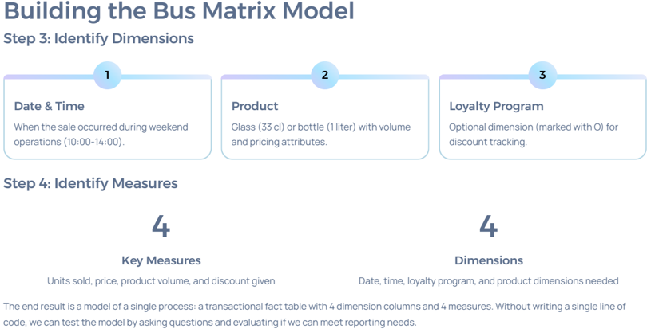
📝 Bus Matrix Model - Example of Processes
Business Process | Grain | Measures | Loyalty Program | Product | Date | Time | Batch # | Ingredient | Waste Cause |
|---|---|---|---|---|---|---|---|---|---|
Selling Lemonade | One row for each product sold to a customer of a given datetime transaction | Sales Units, Sales Value, Sales Volume, Discount Value | O | O | O | O | X | X | X |
Making Lemonade | One row for each batch of lemonade made, per product | Volume, Units | X | O | O | O | O | X | X |
Purchase Ingredients | One row for each item purchased for making lemonade | Units, Cost | X | X | O | X | X | O | X |
Waste | One row for each ingredient or product that is thrown to the garbage as waste | Units | O | O | O | X | X | O | O |
📈 Complete Bus Matrix: Driving Value
By repeating the 4 steps for all processes, a comprehensive Bus Matrix is created, linking multiple fact tables through shared dimensions.
Complex Analysis: Perform analysis across all 4 processes as fact tables link via shared dimensions.
Process Optimization: Identify batches with most waste and manage purchase orders to meet expected demand.
Agile Development: Drive prioritization and apply agile methodologies by de-selecting parts without missing important elements.
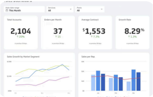
The Bus Matrix allows for building an enterprise data warehouse incrementally, delivering business value process by process while maintaining integration and flexibility for future growth.
🌟 Data Modeling Approaches: Star Schema
Data modeling approaches form a hierarchical pyramid, reflecting how data is progressively refined and optimized for different purposes within a data platform.
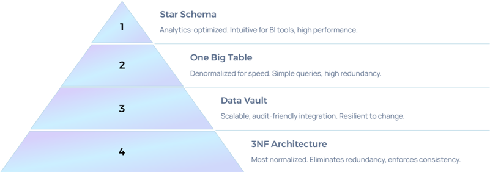
This pyramid illustrates the flow from highly structured operational data, through integration layers, to simplified analytical models for business consumption.
🏛️ Transactional Database (3NF)
Purpose: Manages day-to-day operations of an organization (e.g., sales, inventory, orders).
Data Type: Stores current, real-time, and highly detailed data.
Structure: Optimized for CRUD (Create, Read, Update, Delete) operations.
Design: Highly normalized to minimize redundancy and ensure data integrity (typically Third Normal Form - 3NF).
Query Pattern: Primarily handles simple, quick queries for transaction processing.
Performance: Focused on fast data insertion and updates rather than complex analytical queries.
Examples: ERP systems, CRM systems, order processing systems.
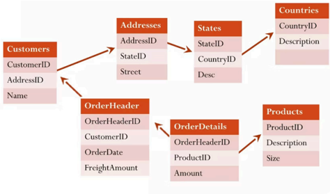
🌠 Dimensional Modeling: Star Schema
The star schema is a foundational design for data warehouses, optimizing data for analytical processing.
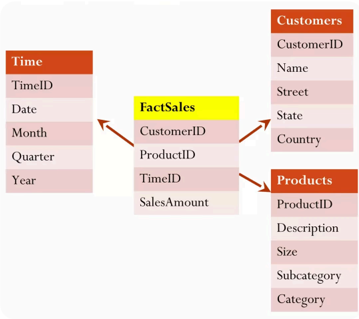
Star Schema Characteristics
Purpose: Organizes data into facts and dimensions for analytical processing (OLAP).
Structure: A central fact table connected to multiple dimension tables, resembling a star shape.
Fact Table: Stores quantitative data (measures), such as sales, revenue, or quantities.
Dimension Tables: Contain descriptive attributes (context), e.g., customer, time, product.
Normalization: Typically denormalized for performance in data retrieval and reporting, reducing the need for joins.
Query Performance: Optimized for fast read-heavy operations and aggregations.
Simple Design: Easy to understand and query, suitable for BI tools.
❄️ Dimensional Modeling: Snowflake Schema
The snowflake schema is a more normalized version of the star schema.
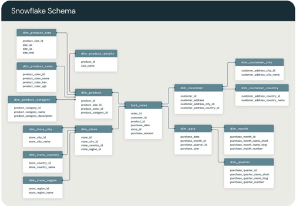
Purpose: A more normalized version of the star schema, used for analytical processing.
Structure: Fact table at the center, surrounded by normalized dimension tables, which may have further sub-dimensions. This creates a branching structure.
Normalization: Higher normalization (typically 3NF) reduces redundancy but can complicate queries due to more joins.
Fact Table: Stores quantitative data (e.g., sales revenue, units sold).
Dimension Tables: More complex and divided into multiple related tables.
Query Performance: May be slower than star schema due to increased joins.
Storage Efficiency: More efficient for storage due to reduced redundancy.
Example Use Case: Complex analytics where data consistency and storage are critical.
📊 Fact Table
The fact table is the central component in a star or snowflake schema, storing measurable business metrics.
Purpose: Contains measurable business metrics related to events (sales, appointments, etc.).
Data Type: Stores numeric data, such as sales revenue, transaction count, or profit.
Granularity: Defined by the level of detail of the data (e.g., daily, hourly).
Key Columns: Contains foreign keys to dimension tables (e.g.,
product_id,time_id,customer_id).Measures: Contains numeric facts or aggregatable measures (e.g., total sales).
Performance: Optimized for fast aggregation and analysis.
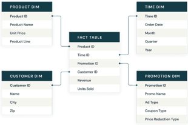
The sales fact table contains foreign keys to dimensions plus numeric metrics (e.g., Revenue, UnitsSold) that measure business performance.
🌳 Dimension Table
Dimension tables provide the descriptive context for the facts in a data warehouse.
Purpose: Describes the context of the facts in a data warehouse or analytical model.
Data Type: Stores descriptive, categorical data (e.g., customer names, product categories).
Structure: Contains attributes that provide the "dimensions" for analysis (e.g., time, location).
Keys: Each dimensional table is usually linked to a fact table via a foreign key.
Denormalization: Often denormalized for faster querying and simplicity.
Example Columns: Customer name, product type, region, time period.
Use Case: Allows users to slice and dice facts by different attributes (e.g., sales by region, product).
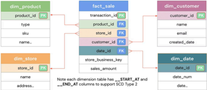
Product, Store, Customer, and Date dimensions provide contextual information, joining with facts to answer specific business questions like monthly product popularity or quarterly store performance.
🛠️ Steps of Designing a Star Schema Model
Designing an effective star schema model involves a systematic approach:
Identify the Business Process: Define the key business activities to be analyzed, including relevant metrics, KPIs, and initial dimensions.
Select Granularity: Determine the lowest level of detail for your data. Start at the finest grain, considering trade-offs between storage costs and query performance.
Determine Dimensions: Design dimension tables with unique, not-null primary keys. These tables provide descriptive context for the facts.
Consolidate the Facts: Store quantitative metrics and measures in fact tables, linking them to dimension tables using foreign keys.
Build a Schema: Choose the appropriate schema type (star, snowflake, or fact constellation) and implement it, ideally via infrastructure as code with automated tests.
Optimize for Query Performance: Index the fact table on key columns (foreign keys) for efficient querying. Create derived fact tables for high-level aggregations.
✅ Benefits of Star Schema Models
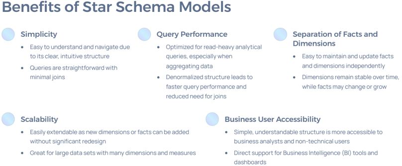
Simplicity: Easy to understand and navigate due to its clear, intuitive structure. Queries are straightforward with minimal joins.
Query Performance: Optimized for read-heavy analytical queries, especially when aggregating data. Denormalized structure leads to faster query performance and reduced need for joins.
Separation of Facts and Dimensions: Easy to maintain and update facts and dimensions independently. Dimensions remain stable over time, while facts may change or grow.
Scalability: Easily extendable as new dimensions or facts can be added without significant redesign. Great for large datasets with many dimensions and measures.
Business User Accessibility: Simple, understandable structure is more accessible to business analysts and non-technical users. Direct support for Business Intelligence (BI) tools and dashboards.
❌ Drawbacks of Star Schema Models
Limited Agility for Changes:
Adding new sources or making structural changes can be challenging.
Changes in business requirements often require redesign or schema restructuring.
Changes of fact table granularity require reloading.
Historic refill (backfill) can be challenging.
Maintenance Complexity:
Managing large fact tables with a high number of records can become difficult.
Ensuring consistency across fact tables with different granularities can be complex.
Potential for Data Integrity Issues: If dimension tables are not properly maintained, data integrity issues may arise, especially with attributes that change frequently.
Data Redundancy: Due to denormalization, dimension tables may contain redundant data, leading to higher storage costs. Updates to dimension attributes require updating multiple rows.
Not Ideal for Real-Time Processing: Optimized for historical data analysis and may not support real-time transaction processing or low-latency updates.
Lack of Flexibility for Complex Relationships: More complex many-to-many relationships may be harder to model.
Maintenance Nightmare: The effort and cost of maintaining information marts can increase significantly over time.
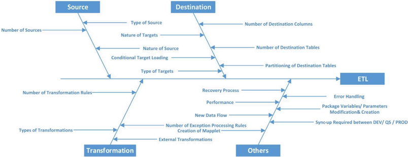
🌳 Dimensional Modeling: Dimension Tables
Dimension tables are crucial in dimensional modeling, providing descriptive context for the facts in a data warehouse. They represent entities relevant to business and analytics requirements, such as products, people, places, dates, and times.
📝 Understanding Dimension Tables
In a dimensional model, a dimension table describes an entity relevant to your business and analytics requirements. These tables typically represent:
What: Items sold or manufactured.
Where: Locations, regions, stores.
Who: Customers, employees, salespeople.
When: Dates and timestamps of events.
Dimension tables are often prefixed with d_ or Dim_ for easy identification.
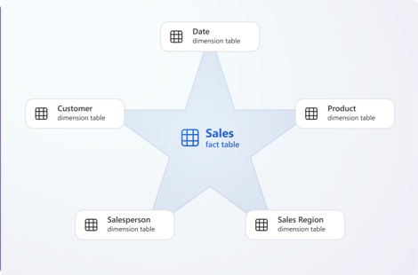
Example d_Salesperson table structure:
CREATE TABLE d_Salesperson (
Salesperson_SK INT NOT NULL, -- Surrogate key
EmployeeID VARCHAR(20) NOT NULL, -- Natural key(s)
FirstName VARCHAR(20) NOT NULL,
-- ... other dimension attributes
SalesRegion_FK INT NOT NULL, -- Foreign key(s) to other dimensions
-- Historical tracking attributes (SCD type 2)
RecChangeDate_FK INT NOT NULL,
RecValidFromKey INT NOT NULL,
RecValidToKey INT NOT NULL,
RecReason VARCHAR(15) NOT NULL,
RecIsCurrent BIT NOT NULL,
-- Audit attributes
AuditMissing BIT NOT NULL,
AuditIsInferred BIT NOT NULL,
AuditCreatedDate DATE NOT NULL,
AuditCreatedBy VARCHAR(15) NOT NULL,
AuditLastModifiedDate DATE NOT NULL,
AuditLastModifiedBy VARCHAR(15) NOT NULL
);🔑 Surrogate Keys: The Foundation
A surrogate key is a single-column unique identifier, generated and stored in the dimension table. It serves as the primary key for relating to other tables in the dimensional model.
Key Benefits
Consolidate multiple data sources without identifier clashes.
Convert multi-column natural keys into efficient single-column keys.
Track dimension history with SCD type 2.
Optimize fact table storage with the smallest possible integer data type.
Best Practice
A surrogate key column is recommended even when a natural key seems acceptable. Avoid giving meaning to key values, except for date and time dimension keys.
Dimension Surrogate Keys Generation Approaches
Approach | Pros | Cons |
|---|---|---|
Hash of the business (natural) key (e.g., SHA256 or MD5) | Can be processed in a distributed environment; Reloads generate the same values; Doesn't require joins to dimensions to identify the surrogate key when loading fact tables | Requires that the business key is stable; Not as user-friendly as INT keys |
Generate GUID (Globally Unique Identifier) | Can be processed in a distributed environment | Requires joins to dimensions to load fact tables; Not as user-friendly as INT keys; Reloads generate new values, so if a dimension table is reloaded, all fact tables that reference it should be reloaded as well |
Generate an autoincremented value (identity column) | User (engineer)-friendly values; Facilitates more efficient ordering by INTs that corresponds to the loading sequence | Requires joins to dimensions to load fact tables; Reloads generate new values, so if a dimension table is reloaded, all fact tables that reference it should be reloaded as well; Inefficient to generate in distributed environments |
Caution: Never perform a truncate and full reload of a dimension table with automatically generated surrogate keys if it's referenced by fact tables or supports SCD type 2 changes.
🗑️ Dimension Member Deletions
Avoid synchronizing deletions with the dimension table, unless members were created in error and have no related fact records.
Soft Delete Approach
Mark dimension members as no longer active or valid using a Boolean attribute (e.g., IsDeleted or IsActive). Update this column to TRUE (1) for deleted members.
Current Version Tracking
The current, latest version of a dimension member can be marked with a Boolean (bit) value in IsCurrent or IsActive columns.
Reporting Filters
All reporting queries and Power BI semantic models should filter out soft-deleted records to maintain data integrity.
🕵️ Audit Attributes
Audit attributes are optional but highly recommended. They track when and how dimension records were created or modified, and can include diagnostic information from ETL processes.
Temporal Tracking: Track who (or what process) updated a row and when.
Diagnostics: Help diagnose challenging problems, like when an ETL process stops unexpectedly.
Quality Flags: Flag dimension members as errors or inferred members for data quality monitoring.
📏 Dimension Table Size Considerations
The most useful and versatile dimensions are often big, wide dimensions (millions+ rows, hundreds of attributes). Size isn't the primary concern; what matters is that the dimension supports required filtering, grouping, and accurate historical analysis.
Big Dimensions: Sourced from multiple systems, requiring combining, merging, deduplicating, and standardizing data while assigning surrogate keys.
Small Dimensions: Tiny lookup tables with few records and attributes, often storing category values.
Consolidation Tip: When many small dimensions exist, consider consolidating them into a junk dimension to reduce clutter and improve efficiency.
⚖️ Denormalization vs. Normalization
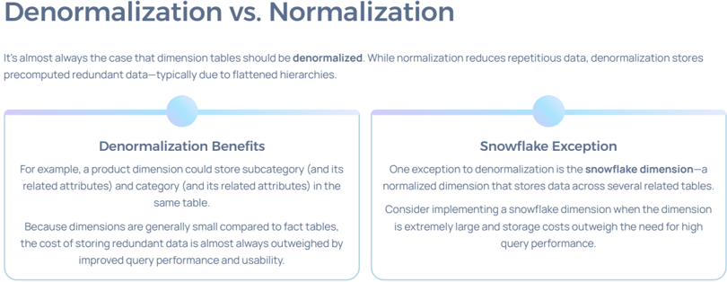
Snowflake Dimensions
A snowflake dimension is a normalized dimension, storing data across several related tables.
When to Use Snowflake Dimensions
The dimension is extremely large, and storage costs outweigh query performance needs.
You need keys to relate the dimension to higher-grain facts.
You need to track historical changes at higher levels of granularity.
Important: A hierarchy in a semantic model can only be based on columns from a single table. A snowflake dimension should deliver a denormalized result using a view that joins the snowflake tables together.
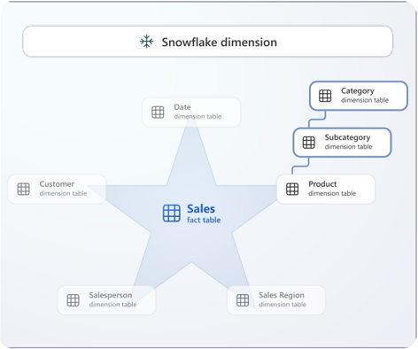
The diagram shows a snowflake dimension comprising three related dimension tables: Product, Subcategory, and Category, each with specific attributes at its level of granularity.
🌲 Understanding Hierarchies
Dimension columns commonly produce hierarchies that enable exploring data at distinct levels of summarization (e.g., drilling down from yearly to quarterly sales).
Single Denormalized Dimension: Columns from one table storing all hierarchy levels.
Snowflake Dimension: Multiple related tables forming hierarchy levels.
Parent-Child Relationship: Self-referencing dimension for unbalanced hierarchies.
Hierarchies can be balanced, unbalanced, or ragged.
Balanced Hierarchies
Balanced hierarchies are the most common, having the same number of levels across all branches.
Common Examples:
Calendar hierarchy: Year $\rightarrow$ Quarter $\rightarrow$ Month $\rightarrow$ Date
Geography hierarchy: Country $\rightarrow$ State $\rightarrow$ City
Product hierarchy: Category $\rightarrow$ Subcategory $\rightarrow$ Product
Levels are based on columns from a single, denormalized dimension, or from tables that form a snowflake dimension.
Facts always relate to a single level, typically the lowest, allowing facts to be aggregated (rolled up) to the highest level.
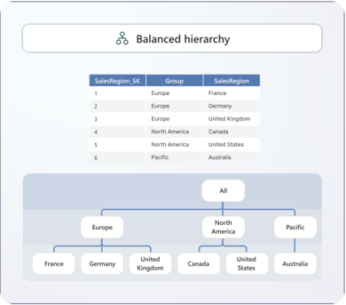
Unbalanced Hierarchies
Unbalanced hierarchies are less common and have levels based on a parent-child relationship. The number of levels is determined by the dimension rows, not specific columns, meaning different branches can have different depths.
Common Examples: Employee hierarchies (reporting structures), bill of materials, company ownership models, general ledger accounts.
Recommendation: Naturalize the hierarchy by transforming and storing hierarchy levels as columns in the dimension.
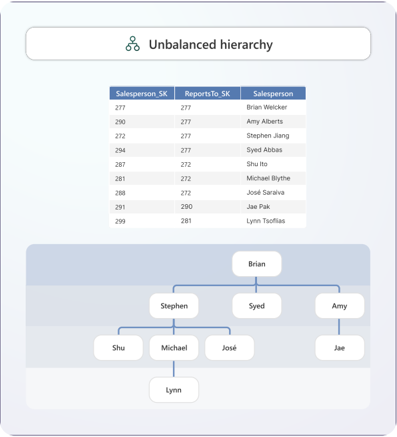
Ragged Hierarchies
A hierarchy is ragged when the parent of a member exists at a level that's not immediately above it. Missing level values repeat the value of the parent.
Example: In a geography hierarchy, New Zealand may have no states. The country value ("New Zealand") would be repeated in the
StateProvincecolumn.
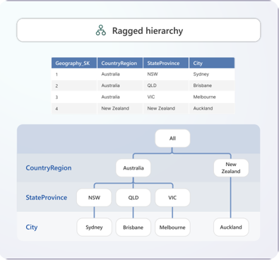
⏳ Managing Historical Change
Slowly Changing Dimensions (SCDs) are mechanisms to manage how changes to dimension data are handled over time, preserving historical context.
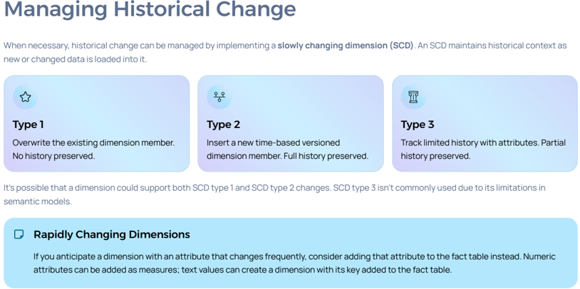
SCD Type 1: Overwrite
Action: Overwrites the existing dimension row, as there's no need to keep track of changes. Also used to correct errors.
Impact: No history preserved. The existing row is updated, which can result in different higher-level aggregations for historical data.
Example: If a salesperson is assigned to a new region, historic sales will roll up to the new region as if they were always assigned there.
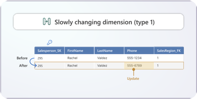
SCD Type 2: Versioning
Action: Inserts a new row representing a time-based version of a dimension member. There's always a current version.
Key Requirements: Requires a surrogate key because there will be duplicate natural keys. Historical tracking attributes (e.g.,
RecValidFromKey,RecValidToKey,RecIsCurrent) store validity periods.Impact: Full history preserved. The granularity of related fact tables is at the member version level, allowing historic results to roll up correctly, but analysts must navigate multiple member versions.
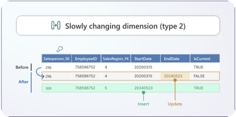
SCD Type 2 Implementation Details
Update Current Version: Set the end validity date to the ETL processing date and the current flag to
FALSE.Insert New Version: Set the start validity date to the previous end date and the current flag to
TRUE.Balance: Avoid too many SCD type 2 changes on a dimension, as it can complicate analysis. Consider adding frequently changing attributes to the fact table instead.
SCD Type 3: Limited History
Action: Tracks limited history by storing previous and current values in separate columns.
Use Case: Useful when you only need to preserve the most recent change.
Mechanism: Overwrites the dimension row while keeping the previous value in a dedicated column (e.g.,
PreviousSalesRegion).Limitations: Not practical in real-life due to frequent schema changes required for tracking new columns. Not commonly used in semantic models.
📅 Date Dimension
The date (or calendar) dimension is the most common dimension, storing one row per date and supporting filtering/grouping by periods.
Natural Key: Should use the
DATEdata type.Surrogate Key: Should store the date in YYYYMMDD format using the
INTdata type, making it human-readable, efficient, and ISO 8601 compliant.Attributes: Includes columns for Year, Quarter, Month, Day, WeekOfYear, IsHoliday, HolidayText, IsWeekday, LastDayOfMonth, and relative offsets (e.g.,
RelativeMonthOffset).Population: Generated beforehand (e.g., 100 years * 365 = 36,500 rows) and rarely modified. Should include future dates for targets or forecasts.
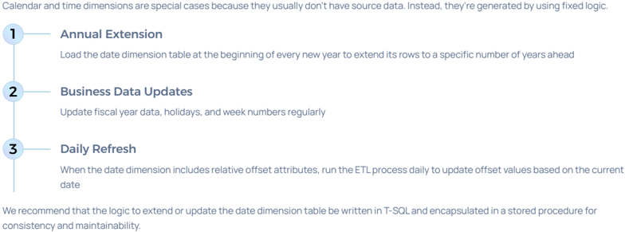
⏰ Time Dimension
When facts require analysis at a specific point in time, a dedicated time (or clock) dimension is essential.
Granularity: Can range from minutes (1,440 rows) to seconds (86,400 rows).
Natural Key: Should use the
TIMEdata type.Surrogate Key: Consider a human-readable
INTformat likeHHMMorHHMMSS.Attributes: Includes Hour, HalfHour, QuarterHour, Minute, time period labels (morning, afternoon), work shift names, and peak/off-peak flags.
Important: A date dimension should not include a grain that extends to time of day. Use both a date dimension and a separate time dimension.
🤝 Conformed Dimensions
Conformed dimensions are shared across multiple fact tables, delivering consistency and reducing development effort.
Common Examples: Date dimensions (used by nearly all fact tables) and product dimensions.
Benefit: Ensures consistent data analysis across different business areas.
Entity Overlap: When entities overlap (e.g., employees who are also system users), combine their attributes into a single conformed dimension.
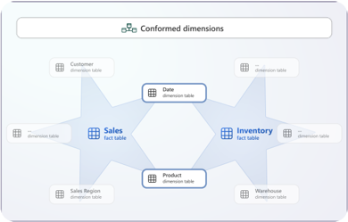
🌌 Fact Constellation and Galaxy Schemas
Fact Constellation Schema
A constellation schema consists of a set of star schemas with hierarchically linked fact tables.
The links between various fact tables provide the ability to "drill down" between levels of detail (e.g., from Sale to Sale Item).
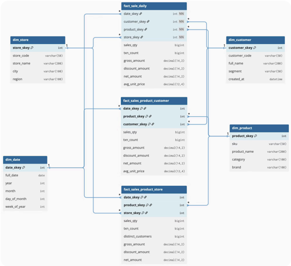
Fact Galaxy Schema
More generally, a set of star schemas or constellations can be combined to form a galaxy.
A galaxy is a collection of star schemas with shared dimensions.
Unlike a constellation schema, the fact tables in a galaxy do not need to be directly related.

🎭 Role-Playing Dimensions
A role-playing dimension occurs when a dimension is referenced multiple times in a fact table, with each reference representing a distinct role.
Example: A sales fact table may have
OrderDate_Date_FK,ShipDate_Date_FK, andDeliveryDate_Date_FKkeys, all referencing the same physical date dimension.Another Example: An Airport dimension related twice to a Flight fact table as
Departure AirportandArrival Airport.
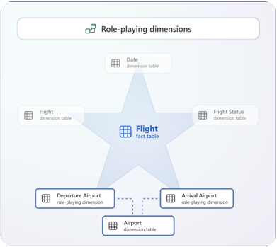
🗑️ Junk Dimensions
A junk dimension consolidates many small dimensions into a single dimension. It is useful when there are many independent dimensions with few attributes and low cardinality.
Benefits:
Reduce the number of dimensions.
Decrease fact table keys and storage size.
Reduce Data pane clutter.
Good Candidates: Flags and indicators, order status, customer demographic states (gender, age group).
A junk dimension table typically stores the Cartesian product of all dimension attribute values with a surrogate key.
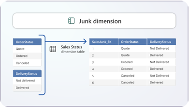
👻 Degenerate Dimensions
A degenerate dimension occurs when the dimension is at the same grain as the related facts. A common example is a sales order number dimension that relates to a sales fact table.
Typically, the invoice number is a single, non-hierarchical attribute in the fact table. It's accepted practice not to copy this data to create a separate dimension table.
You can create a view in a Fabric Warehouse that presents the degenerate dimension as a dimension for querying purposes.
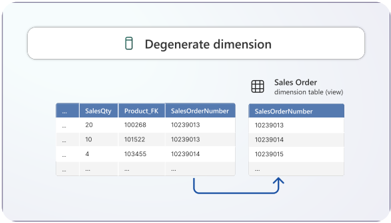
⛵ Outrigger Dimensions
When a dimension table relates to other dimension tables, it's known as an outrigger dimension. An outrigger dimension helps to conform and reuse definitions in the dimensional model.
Example: A geography dimension storing geographic locations for every postal code, referenced by both customer and salesperson dimensions. This ensures consistent geographic locations for analysis.
The date dimension can be used as an outrigger dimension when other dimension table attributes store dates (e.g., birth date in a customer dimension using the date dimension's surrogate key).
↔️ Multivalued Dimensions
When a dimension attribute must store multiple values, you implement a multivalued dimension using a bridge table (or join table) to store the many-to-many relationship between entities.
Example: If salespeople can be assigned to multiple sales regions, a bridge table stores each salesperson-region relationship, creating a logical many-to-many relationship.
Practical Approach: Have direct Foreign Keys (FKs) from the fact table to all combinations stemming from the many-to-many relationship (e.g., FKs to both Customer and Account).
🎯 Dimensions: Key Takeaways
Design Principles
Use surrogate keys for all dimensions.
Denormalize for performance and usability.
Include audit attributes for tracking.
Balance historical tracking needs with complexity.
Common Patterns
Implement date and time dimensions for temporal analysis.
Use conformed dimensions for consistency.
Apply SCD types based on business requirements.
Leverage role-playing dimensions when appropriate.
Special Considerations
Consolidate small dimensions into junk dimensions.
Naturalize unbalanced hierarchies when possible.
Use bridge tables for many-to-many relationships.
Create views for degenerate dimensions.
🏷️ Dimensional Modeling: Entity Classification
Entity classification is the first step in converting an Entity Relationship (ER) model into a dimensional model for analytics and reporting. The goal is to understand the role each entity plays in analysis and prepare for building fact and dimension tables in a star schema.
📈 Step 1: Classify Entities Overview
This initial stage helps transform complex operational models into simplified analytical models.
Entities are classified into three distinct categories based on how they represent business activity and context: Transaction, Component, and Classification Entities.
Why Classification Matters
Identify Business Events: Helps pinpoint which business events decision-makers want to analyze and track.
Structure Star Schemas: Provides a clear structure for organizing fact tables and dimension tables.
Simplify Models: Simplifies complex operational models for analytical use while preserving essential business meaning.
💰 Transaction Entities
Transaction entities record details about specific business events that occur at a point in time. These events are typically the primary focus of analysis and represent measurable activities.
Key Characteristics
Describe an event that happens at a specific moment in time.
Contain measurements or quantities (e.g., dollar amounts, weights, volumes, counts).
Most many-to-many relationships represent transaction entities.
Role in Dimensional Modeling
Transaction entities are the most important in a data warehouse.
They form the basis for constructing fact tables in star schemas.
User input is required to identify which transactions are relevant for analytical requirements.
Common Examples
Orders | Insurance Claims |
|---|---|
Customer purchase transactions with line items and totals | Filed claims with amounts and processing details |
Salary Payments | Hotel Bookings |
Payroll transactions with amounts and payment dates | Reservation events with rates and stay duration |
Attendance | Log In |
Entering a room | Each log in and log out event in a system |
IoT measurements | Exam Attempt |
Measuring a specific value by a sensor at any point in time | Each exam attempt, even a failed one, is an event |
🧩 Component Entities
Component entities are directly related to transaction entities through one-to-many relationships. They describe the individual components or dimensions that define each business event, providing essential context.
Role in Dimensional Modeling
Component entities become dimension tables in star schemas.
They provide the business context for slicing, dicing, and filtering fact data.
They answer fundamental analytical questions: who, what, when, where, how, and why for each transaction.
Customer | Product |
|---|---|
Who made the purchase or participated in the event | What was sold or what item was involved |
Location | Period |
Where the transaction occurred or was processed | When the transaction took place in time |
Important Note: Time is a critical component entity because historical analysis is a core requirement of data warehouses. Every fact table should include time dimensions for trend analysis.
🏷️ Classification Entities
Classification entities are related to component entities through chains of one-to-many relationships. They are functionally dependent on component entities, representing hierarchical structures.
Purpose
Represent hierarchies embedded within the data model.
Capture classification and grouping structures such as categories and levels.
Enable drill-down and roll-up analysis paths.
If data is suitable for a low-cardinality dropdown in a UI, it's likely a Classification entity.
Role in Dimensional Modeling
Collapse Hierarchies: Classification entities can be collapsed into component entities when creating dimension tables.
Support Analysis: They support hierarchical analysis such as roll-ups and drill-downs across levels.
Preserve Meaning: They simplify the analytical model while preserving business meaning and relationships.
🧐 Resolving Ambiguities
When an entity fits into multiple categories, a precedence hierarchy is used:
Transaction Entity (highest precedence)
Classification Entity
Component Entity (lowest precedence)
This hierarchy determines an entity's primary role in a star schema.
🌲 Hierarchies
Hierarchies are crucial in dimensional modeling, forming the primary basis for deriving dimensional models from ER models. Most dimension tables embed these hierarchies. An ER model hierarchy is a sequence of entities joined by one-to-many relationships, aligned in the same direction.
Parent/Child: State is the parent of Region; Region is the child of State.
Descendants: Sale Item, Sale, Sale Location, Region are all descendants of State.
Ancestors: Sale, Sale Location, Region, State are all ancestors of Sale Item.
Maximal Hierarchy
A hierarchy is maximal if it cannot be extended further upwards or downwards, capturing the complete scope of a business relationship.
Minimal Entity
An entity is minimal if it resides at the very bottom of a maximal hierarchy, possessing no further one-to-many relationships pointing away from it ("leaf" entities).
Maximal Entity
An entity is maximal if it is positioned at the top of a maximal hierarchy, meaning it has no further many-to-one relationships leading to it ("root" entities).
Entity Hierarchies Example
From an example data model, we can identify:
Minimal Entities: Sale Item and Sale Fee (2 entities).
Maximal Entities: Period, CustomerType, State, Location Type, Product Type, and Fee Type (6 entities).
These hierarchies define detailed relationships and lineage, providing a structured view for analysis.
Product Hierarchies: Product-type $\rightarrow$ Product $\rightarrow$ Sale-item; Fee-type $\rightarrow$ Sale-fee.
Customer Hierarchies: State $\rightarrow$ Region $\rightarrow$ Customer $\rightarrow$ Sale $\rightarrow$ Sale-fee (and Sale-item); Customer-type $\rightarrow$ Customer $\rightarrow$ Sale $\rightarrow$ Sale-fee (and Sale-item).
Location Hierarchies: Location-type $\rightarrow$ Location $\rightarrow$ Sale $\rightarrow$ Sale-fee (and Sale-item); State $\rightarrow$ Region $\rightarrow$ Location $\rightarrow$ Sale $\rightarrow$ Sale-fee (and Sale-item).
Time Hierarchies: Period(sale-date) $\rightarrow$ Sale $\rightarrow$ Sale-fee (and Sale-item); Period(posted-date) $\rightarrow$ Sale $\rightarrow$ Sale-fee (and Sale-item).
🔨 Producing Dimensional Models
Dimensional modeling employs specialized operators to transform ER models into star schemas, optimizing data for analytical queries.
Operator 1: Collapse Hierarchy
This foundational operator consolidates attributes from a higher-level entity into a lower-level entity within a one-to-many hierarchy.
Process: A deliberate act of denormalization, introducing redundancy to create flatter, more performant dimension tables.
Example: Attributes of a 'State' entity (State ID, State Name) are absorbed into the 'Region' entity, creating a single, broader dimension.
Operator 2: Aggregation
The aggregation operator is applied to a transaction entity to create a new entity containing summarized data.
Process: Involves selecting a subset of numerical attributes to aggregate and another subset of attributes to group by.
Example: Applying aggregation to a
Sale Itementity to create aProduct Summaryentity (e.g., total sales amount, average quantity per order, average price per item on a daily basis).Aggregation Attributes: Quantity, Price.
Grouping Attributes: Product ID, Sale Date.
Important: Aggregation inherently involves a loss of detailed information. Once data is summarized, it's not possible to reconstruct individual details.
Consequence: In ETL, one fact table is usually kept at the lowest granularity, and then other aggregate fact tables are created.
📊 Dimensional Modeling: Fact Tables
Fact tables are the core of a dimensional model, storing measurable business metrics and linking to dimension tables for context. They are typically narrow (few columns) but immense in terms of rows (billions+).
📝 Fact Table Structure
Consider a sales fact table named f_Sales as an example of good design practices:
CREATE TABLE f_Sales (
-- Dimension keys
OrderDate_Date_FK INT NOT NULL,
ShipDate_Date_FK INT NOT NULL,
Product_FK INT NOT NULL,
Salesperson_FK INT NOT NULL,
-- Attributes
SalesOrderNo INT NOT NULL,
SalesOrderLineNo SMALLINT NOT NULL,
-- Measures
Quantity INT NOT NULL,
-- Audit attributes
AuditMissing BIT NOT NULL,
AuditCreatedDate DATE NOT NULL,
AuditCreatedBy VARCHAR(15) NOT NULL,
AuditLastModifiedDate DATE NOT NULL,
AuditLastModifiedBy VARCHAR(15) NOT NULL
);Primary Key and Dimension Keys
Primary Key: Fact tables usually do not have an explicit primary key. It often doesn't serve a useful purpose and increases storage size unnecessarily. The primary key is often implied by the set of dimension keys and attributes.
Dimension Keys: References to the surrogate keys (or higher-level attributes) in related dimensions. An unusual fact table would not include at least one date dimension key.
Role-Playing Dimension: A fact table can reference a dimension multiple times. For example,
OrderDate_Date_FKandShipDate_Date_FKboth reference the same physical date dimension, each playing a distinct role.
Attributes, Measures, and Audit Attributes
Attributes: Provide additional information and set the granularity of fact data, but are neither dimension keys nor dimension attributes, nor measures. Examples include sales order numbers or tracking numbers. An attribute can form a degenerate dimension for analysis.
Measures: Typically numeric and commonly additive (can be summed and summarized). The
Quantitycolumn in the example is a measure.Audit Attributes: Optional attributes that track when and how fact records were created or modified, and can include diagnostic information from ETL processes.
📏 Fact Table Size and Design Concepts
Fact tables vary in size based on dimensionality, granularity, number of measures, and amount of history. They are typically narrow (fewer columns) but big or immense in terms of rows (exceeding billions).
Three Types of Fact Tables
Transaction fact tables
Periodic snapshot fact tables
Accumulating snapshot fact tables
Measure Types
Measures are typically numeric and commonly additive. However, some measures are semi-additive or non-additive.
Additive Measures: Can be summed across any dimension (e.g., order quantity, sales revenue in a single currency).
Semi-Additive Measures: Can be summed across certain dimensions only.
Any measure in a periodic snapshot fact table cannot be summed across other time periods.
A stock balance measure in an inventory fact table cannot be summed across other products.
Sales revenue with a currency dimension key cannot be summed across currencies.
Non-Additive Measures: Cannot be summed across any dimension (e.g., temperature reading, rates, ratios). These can still be aggregated using count, distinct count, minimum, maximum, or average.
🛒 Transaction Fact Tables
A transaction fact table stores business events or transactions. Each row stores facts in terms of dimension keys and measures, and optionally other attributes. All data is fully known when inserted and never changes (except for error correction).
Typically store facts at the lowest possible level of granularity.
Contain measures that are additive across all dimensions.
Example: A sales fact table storing every sales order line.
fact_salehas the granularity of the most granular table in the source database (e.g.,sales_order_details,sales_items).
📸 Periodic Snapshot Fact Tables
A periodic snapshot fact table stores measurements at a predefined time or specific intervals. It provides a summary of key metrics over time and is useful for trend analysis. Measures are always semi-additive.
Example: An inventory fact table loaded daily with the end-of-day stock balance of every product.
Use Case: Used when recording large volumes of transactions is expensive and does not support useful analytical requirements, focusing on trends rather than individual transactions.
🔄 Accumulating Snapshot Fact Tables
An accumulating snapshot fact table stores measurements that accumulate across a well-defined period or workflow. It often records the state of a business process at distinct stages or milestones, which might take days, weeks, or months to complete.
Initial Event: A fact row is loaded soon after the first event in a process.
Milestone Updates: The row is updated in a predictable sequence every time a milestone event occurs.
Process Completion: Updates continue until the process completes.
Have multiple date dimension keys, each representing a milestone event.
Some dimension keys might record an
N/Astate until a certain milestone is reached.Measures typically record durations between milestones, providing valuable insight into business workflows.
👻 Factless Fact Tables
A factless fact table does not contain any measure columns. It typically records events or occurrences (e.g., students attending class). From an analytics perspective, a measurement can be achieved by counting fact rows.
Purpose: Records the occurrence of an event or condition with no numeric measures.
Examples: "customer viewed product in store on date", "customer eligible for promotion in store on date", "customer-product-store had at least one touchpoint".
| dim_customer | | fact_customer_product_store_event | | dim_store | |
|----------------|--------------|-------------------------------------|--------------|-----------------|--------------|
| customer_skey | int | customer_skey | int | store_skey | int |
| customer_code | varchar(50) | product_skey | int | store_code | varchar(50) |
| full_name | varchar(200) | store_skey | int | store_name | varchar(200) |
| segment | varchar(50) | event_type_skey | int | city | varchar(100) |
| | | event_ts | datetime | region | varchar(100) |
| | | source system | varchar(50) | | |
| dim_product | | source_event_id | varchar(100) | dim_event_type | |
| product_skey | int | | | event_type_skey | int |
| sku | varchar(50) | | | event_type_code | varchar(50) |
| product_name | varchar(200) | | | event_type_name | varchar(200) |
| category | varchar(100) | | | event_group | varchar(100) |
| brand | varchar(100) | | | is_active | boolean |🌌 Fact Constellation Schema & Fact Galaxy Schema
Fact Constellation Schema
An aggregate fact table represents a rollup of a base fact table to a lower dimensionality and/or higher granularity. Its purpose is to accelerate query performance for commonly queried dimensions.
Consists of a set of star schemas with hierarchically linked fact tables.
Links between fact tables provide the ability to drill down between levels of detail (e.g., from Sale to Sale Item).
Fact Galaxy Schema
More generally, a set of star schemas or constellations can be combined to form a galaxy.
A galaxy is a collection of star schemas with shared dimensions.
Unlike a constellation schema, the fact tables in a galaxy do not need to be directly related.
📥 Dimensional Modeling: Loading Dimensions and Facts
Loading a dimensional model involves periodically running an Extract, Transform, and Load (ETL) process. This process orchestrates the staging of source data, synchronization of dimension data, insertion of rows into fact tables, and recording of auditing data and errors.
Pipelines: Build workflows to orchestrate the ETL process, executing SQL scripts, stored procedures, etc.
Dataflows: Develop low-code logic to ingest data from hundreds of sources using the Power Query experience.
ETL Development: Can be complex and challenging, often consuming 60-80% of a data warehouse development effort.
⚙️ Orchestration
The general workflow of an ETL process follows a structured sequence:
01 | 02 |
|---|---|
Load Staging Tables | Process Dimension Tables |
Optionally extract and stage source data for processing | Synchronize dimension data and handle historical changes |
03 | 04 |
Process Fact Tables | Post-Processing Tasks |
Load fact data with proper dimension key lookups | Trigger refreshes and send notifications |
Dimension tables should be processed first, especially when there are dependencies (e.g., an outrigger dimension like geography must be processed before customer and vendor dimensions).
Fact tables can be processed once all dimension tables are complete.
Post-processing includes triggering refreshes of semantic models and sending notifications about the ETL outcome.
staging data 🚧
Staging data is an intermediary step in the ETL process, where raw source data is temporarily stored before transformation and loading into the data warehouse.
Data Virtualization Alternatives
Consider data virtualization to reduce data movement and improve efficiency:
Mirroring: A low-cost, low-latency solution that creates a replica of your data in OneLake.
PolyBase in SQL Server: Allows T-SQL queries to join data from external sources to relational tables.
OneLake Shortcuts: Point to other storage locations containing source data, usable as tables in T-SQL queries.
Azure SQL Managed Instance: Execute T-SQL queries on files in Azure Data Lake Storage Gen2 or Azure Blob Storage and combine with locally stored relational data.
🔄 Transform Data
The structure of source data often differs from the destination structures of dimensional model tables. The ETL process must reshape and transform source data to ensure quality and consistency.
"Garbage in, garbage out" applies: avoid loading low-quality data into dimensional model tables.
Key Transformation Activities
Combine Data: Integrate data from different sources based on matching keys or append data sharing a common structure (e.g., merging product data using SKU, unioning sales data).
Detect Historical Change: Detect and appropriately store changes in dimension tables to maintain historical accuracy (SCD types).
Convert Data Types: Convert data types to align with the dimensional model tables.
Aggregate Data: Reduce fact table dimensionality or raise the granularity of facts (e.g., grouping sales by dimension keys without storing sales order numbers).
Calculations: Produce values for dimensional model tables (e.g., concatenate first and last names for full name, calculate gross sales revenue).
⬆️ Load Data
Various data ingestion options are available for loading tables in a Fabric Warehouse, each suited for different scenarios.
COPY INTO(T-SQL): Useful for Parquet or CSV files stored in external Azure storage accounts (ADLS Gen2, Azure Blob Storage).Dataflows: Provide a code-free experience to transform and clean data with an intuitive interface.
Pipelines: Can include activities that run T-SQL statements, perform lookups, or copy data from a source to a destination.
Cross-Warehouse Ingestion: When data is stored in the same workspace, allows joining different warehouse or lakehouse tables. Supports
INSERT...SELECT,SELECT INTO, andCREATE TABLE AS SELECT(CTAS) commands for efficient set-based operations.
📝 Logging
ETL processes require dedicated monitoring and maintenance. Logging the results of the ETL process to non-dimensional model tables in your warehouse is recommended.
ETL Process Logging
Unique ID for each execution.
Start time and end time.
Status (success or failure).
Any errors encountered.
Table-Level Logging
Start and end times.
Status indicators.
Rows inserted, updated, deleted.
Final table row count.
Error details.
A semantic model dedicated to monitoring ETL processes can help identify bottlenecks and predict future data warehouse size.
Operation Logging
Start and end times of semantic model refresh operations.
Performance metrics.
Resource utilization.
🌳 Process Dimension Tables
Processing a dimension table involves synchronizing the data warehouse data with source systems. Source data is transformed, prepared, and then matched with existing dimension table data by joining on business keys.
New Products: Rows are inserted into the dimension table.
Modified Products: Existing rows are either updated (SCD type 1) or a new version is inserted and the existing one expired (SCD type 2).
Historical Tracking: SCD type 2 expires current versions and inserts new versions.
📊 Process Fact Tables
Processing a fact table involves synchronizing data with source system facts. Source data is transformed, and for each dimension key, a lookup determines the surrogate key value to store in the fact row.
Dimension Key Lookups
When a dimension supports SCD type 2, the surrogate key for the current version of the dimension member should be retrieved.
For date and time dimensions, the surrogate key can often be computed (e.g., YYYYMMDD or HHMM format).
Integrity Check: Since many DW systems don't enforce foreign keys, the ETL process must check for integrity when loading fact tables.
Handling Lookup Failures
If a dimension key lookup fails (indicating a source system integrity issue), the fact row must still be inserted with a valid dimension key.
Approach 1: Store a special dimension member like
Unknown.Approach 2: If the natural key is valid, insert a new dimension member and store its surrogate key.
Incremental vs. Full Reload
Whenever possible, a fact table should be loaded incrementally (new facts detected and inserted). This is more scalable and reduces workload.
Truncating and reloading a large fact table should be a last resort due to cost, resources, and complexity with SCD type 2 dimensions.
Detecting New Facts
Source System Identifiers/Timestamps: Rely on these to efficiently detect new facts (e.g., storing the latest sales order number as a high watermark).
Change Data Capture (CDC): SQL Server and Azure SQL Managed Instance offer CDC to track row changes.
Create Date Columns: Can reliably detect new orders.
Database Triggers: Add triggers to relational tables that store keys of inserted, updated, or deleted records for efficient change detection.
Inferred Dimension Members
When a fact load process inserts a new dimension member, it's known as an inferred member.
Initial Creation: Only the natural key is known; the fact load process creates a new dimension member with
Unknownattribute values.Late Arriving Details: When details arrive later, the dimension load process updates the dimension row.
Flag as Inferred: Set an audit attribute like
IsInferredMembertoTRUE.
✏️ Fact Updates or Deletions
You might be required to update or delete fact data (e.g., canceled sales orders, changed order quantities).
Soft Deletes Strategy: For canceled orders, change the sales order status (e.g., from
OpentoCanceled) rather than deleting the row. This preserves history.Identification Attributes: Include attributes like sales order number and line number in the fact table to help identify rows for modification. Index these columns for efficient operations.
Quantity Updates: For quantity changes, an update of the fact row quantity measure is necessary.
Periodic Processing: If fact data was inserted using an
Unknowndimension member, run a periodic process to retrieve current source data and update dimension keys to valid values.
All reporting queries and Power BI semantic models should filter out soft-deleted records to ensure accurate reporting.
➡️ Pipeline Lineage
Transformations, Loading Dimensions, Facts, and Derived Facts
This diagram illustrates the flow of data through a pipeline, from raw (bronze) to refined (silver) tables, then into dimension (dim) tables, and finally into fact (fact) tables for analysis. This process transforms and loads data through different stages, preparing it for reporting and analytics.